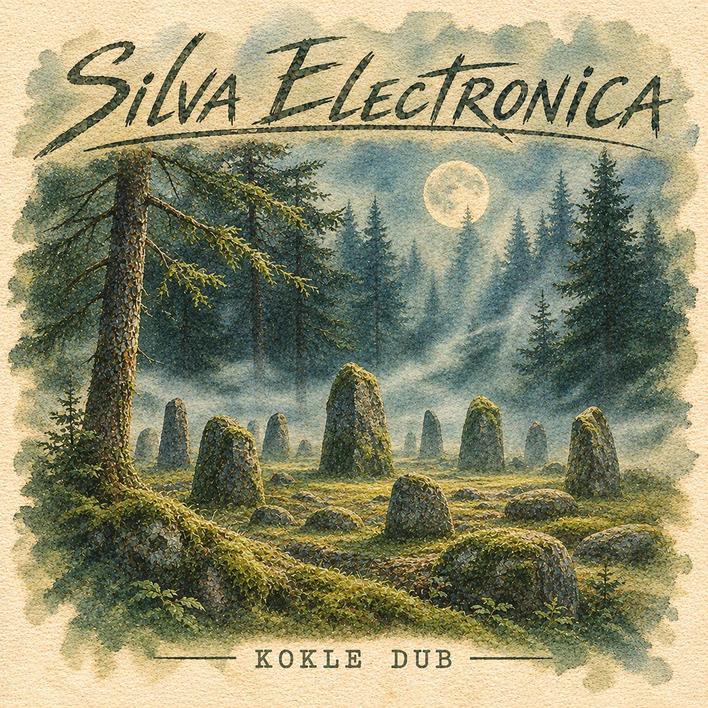
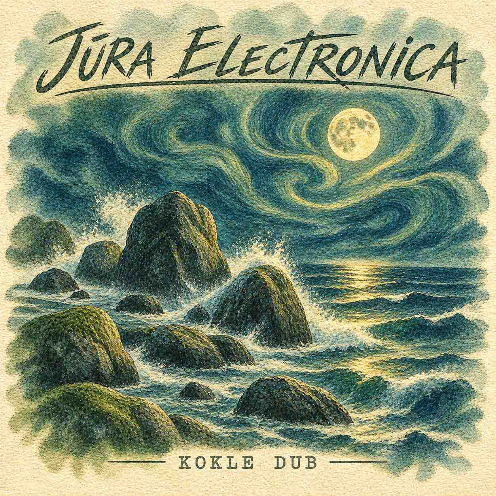

Kokle Dub is an archival reconstruction of a Baltic ethno-electronic project that existed in Riga at the turn of the millennium, leaving behind a diptych. Two cycles recorded at the intersection of folk minimalism, downtempo, and dub. The sound is based on traditional instruments, the footsteps rhythm of a frame drum, field recordings, and deep analog bass. The original chamber intimacy, analog roughness, and absence of philharmonic gloss are preserved. This is music about two elements — forest and sea, where space itself becomes a participant in the ritual.
P · 18

Silva Electronica
Ethno-Electronic · Downtempo
SOON
Kokle Dub — Silva Electronica. Digitized archive of a Baltic ethno-electronic project, believed to have existed in Riga at the turn of the millennium. Folk minimalism, downtempo and dub with original chamber intimacy and analog roughness. It is music about rituals and silence, about the night river and ancient stone circles.
SOON
Streaming links will be added closer to release.
TRACKLIST6 Tracks
01Kokle Dub
02Daugava Nights
03Baltic Trance
04Fog and Bass
05Akmenų Ratas
06Silva Electronica
2006 · Ambient · Ethnic electronica6 Tracks
P · 18

Jūra Electronica
Ethno-Electronic · Downtempo
SOON
Kokle Dub — Jūra Electronica. The second part of the archival diptych of a Baltic ethno-electronic project. Folk minimalism, downtempo, and dub with original chamber intimacy and analog roughness. This is music about sea wind, seagulls, and lighthouses, where space itself becomes a participant in the ritual.